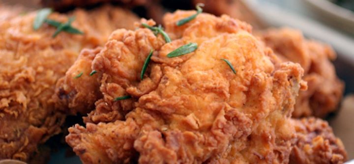

Fried Chicken

Chicken that gives you wings
Ingredients
- All-Purpose flour
- Garlic Salt
- Paprika
- Pepper
- Poultry Seasoning
- Eggs
- Water
- Salt
- Fryer Chickens
- Oil
Recipe Instructions
- In a large shallow dish, combine 2-2/3 cups flour, garlic salt, paprika, 2-1/2 teaspoons pepper and poultry
seasoning. In another shallow dish, beat eggs and 1-1/2 cups water; add salt and the remaining 1-1/3 cups
flour and 1/2 teaspoon pepper. Dip chicken in egg mixture, then place in flour mixture, a few pieces at a
time. Turn to coat.
- In a deep-fat fryer, heat oil to 375°. Fry chicken, several pieces at a time, until chicken is golden brown
and juices run clear, 7-8 minutes on each side. Drain on paper towels.